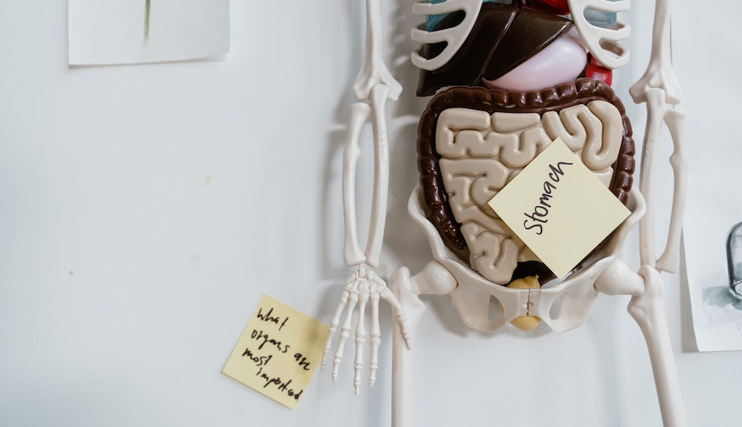

Lektin, protein yapıda ve neredeyse her hücrede bulunan bir moleküldür. Yani bu her besinde bulunduğunu gösterir, besinde bulunduğu miktara göre zararlı ya da zararsız olarak değerlendirmeliyiz. Lektinin protein yapısı sindirilemez ve sindirim sistemini kaplayan hücre zarlarına bağlanırlar. Bu bağlanma ile metabolizmayı bozabilir ve hasara neden olabilirler. Protein yapıda olan lektin çok fazla alerjen madde de içermektedir.
Şimdi lektinin bağırsak üzerindeki etkilerini inceleyelim
Bağırsak hüclerinde küçük süzgeçler halinde bağlantılar mevcuttur. Bu bağlantılardan besinler geçer, toksin ve bakteriler geçemez. Lektin de geçemeyeceği için sürekli olarak bağırsak hücrelerine tutunur. Bu tutunma sonucu bağışıklık hücreleri lektine zarar verirken kendi hücrelerine de zarar verir ve bu bağlantılar zamanla kaybolur. Bağlantıların kaybolması ile beraber toksin ve bakteriler vücudumuza girmeye başlar. Sonuç olarak bağışıklık sistemi hastalıkları ve bağırsak problemlerine kadar birçok soruna risk ortamı hazırlamış olur
Suda bekletme: yaklaşık 1 gün boyunca suda bekletilmeli ve sık sık suyu değiştirilmel,. Bu sayede lektinler yumuşar.
Kaynatma: Bir çalışmada fasulye ıslatmanın lektin içeriğini çıkarmak iiçin yeterli olmadığını bildirmiştir. Düdüklü tencere ile basınç ve yoğun sıcakla pişirilen gıdalardaki lektinler parçalanacaktır.
Mayalama: mayalama işlemi ile bakteriler lektini parçalayacaktır.
Çimlendirmek: lektin miktarını azaltacaktır.
Design By F.Elmas